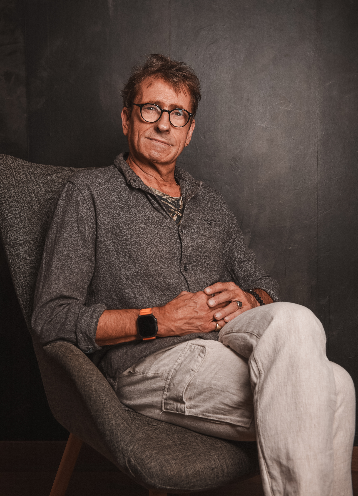

Warum?
Jeder Mensch hat seine Holpersteine.
Süchte, Abhängigkeiten, Selbstzweifel. Kennst du das?
Du bist müde, leer, ausgebrannt.
Du hängst in Mustern fest, die dir nicht guttun.
Abhängigkeiten, Beziehungen, Süchte – sie scheinen stärker als du.
Und plötzlich fragst du dich: „Wer bin ich eigentlich – und wofür lebe ich?“
Ich brenne für diese Themen:
- Abhängigkeiten – besonders Sucht und Alkohol
- Beziehungsprobleme
- Selbstwert, Selbstachtung, Selbstbewusstsein, Selbstbild
Du willst ein neues Drehbuch für dein Leben schreiben?
Du spürst: Es ist Zeit loszugehen. Dann bist du hier richtig.
Ich kann die Fackel sein, die deine Flamme neu entzündet.
Denn: Du hast das Recht, glücklich, erfolgreich und zufrieden zu sein.
Mein eigener Weg war hart: 20 Jahre Alkohol, Unfälle, Abstürze. Heute stehe ich – und vielleicht erspare ich dir ein paar der ganz tiefen Abgründe.

Bin ich ein Coach?
Ja und Nein. Klassisches Coaching kann ich – doch meine Stärke ist: Aufdröseln, Verstehen, Erschaffen.
Ich betrachte das Leben integral. Alles hängt zusammen und bedingt sich: Denken · Fühlen · Handeln · Sein.
Ich bin Experte als:
- Zuhörer & Problem-Detektiv
- Praktiker & Wegfinder
- Humorvoller, liebevoller „An-triebe*r“
- Motivator, kreativer Analyt, Strukturierer
- Lösungsfinder – und hartnäckig

Das innere Kind
Ich begegnete meinem inneren Kind. Es weinte, saß am Boden und flüsterte: „Zu viel Spiral Dynamics. Zu wenig Märchen.“
Ich hielt inne, setzte mich dazu und sagte: „Komm. Ich bring dich nach Hause – und wir schreiben zusammen deine integrale Heldenreise.“
🧠 Kern: Das innere Kind sucht keine Optimierung. Es sehnt sich nach Gesehenwerden.

Ich bin Ove.
62 Jahre alt. 20 Jahre Alkohol – 15 Jahre trocken. Ich habe vieles verloren – und das Wesentliche gefunden.
Heute arbeite ich als Life Trust Coach. Ich begleite Menschen, die nicht mehr nur funktionieren, sondern leben wollen.
- Ich stelle die richtigen Fragen und höre auch zwischen den Zeilen.
- Ich motiviere – ohne zu pushen.
- Ich finde mit dir neue Wege, wenn du gerade keinen siehst.
Meine Geschichte ist kein Makel – sie ist meine Stärke. 70 % Schwerbehinderung, 100 % Mitgefühl.

Was du bekommst
- 🔍 Mehr Klarheit über dich und deine Muster
- 🧘 Mehr innere Ruhe – weniger Druck, weniger Stress
- 🤝 Bessere Beziehungen – zu dir selbst und anderen
- 🌙 Tieferen, erholsameren Schlaf
- 🎯 Ein Wofür – Sinn, Richtung, Orientierung
- ⚡ Mehr Energie für das, was dir wichtig ist
Für wen?
Ob Frau, Mann oder anders frei – hier findest du den Weg, der zu dir passt.
Frauen: Weiblichkeit neu gewinnen – wie eine Königin.
Männer: Männlichkeit werteorientiert leben – wie ein Samurai.
Anders frei: Dein eigener Weg – jenseits von Rollen.